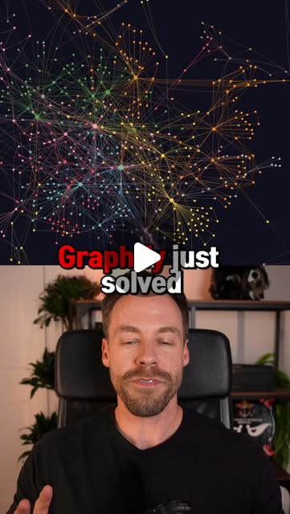

<title>The Claude Harness Pattern: Context, Memory, and Cognitive Scaffolding — DejaViewed Guide</title>
<link rel="stylesheet" href="../shared.css">
<style>
  .guide { max-width: 800px; margin: 2rem auto; padding: 0 1.5rem; }
  .guide h1 { font-size: 1.8rem; margin-bottom: 0.5rem; }
  .guide h2 { color: #7dd3fc; margin-top: 2rem; font-size: 1.3rem; border-bottom: 1px solid rgba(125,211,252,0.2); padding-bottom: 0.5rem; }
  .guide p, .guide li { line-height: 1.7; color: #cbd5e1; }
  .confidence-badge { display: inline-block; padding: 4px 12px; border-radius: 12px; font-size: 0.8rem; font-weight: 600; margin-bottom: 1rem; }
  .confidence-badge.high { background: rgba(34,197,94,0.15); color: #4ade80; border: 1px solid rgba(34,197,94,0.3); }
  .confidence-badge.medium { background: rgba(250,204,21,0.15); color: #fbbf24; border: 1px solid rgba(250,204,21,0.3); }
  .meta { color: #64748b; font-size: 0.85rem; margin-bottom: 1.5rem; }
  .entries-section { margin-top: 2rem; }
</style>
<script src="../shared.js" defer></script>

<article class="guide">
  <div class="confidence-badge high">Source confidence: high</div>
  <h1>The Claude Harness Pattern: Context, Memory, and Cognitive Scaffolding</h1>
  <div class="meta">emergent_capability · 9 connected entries · Medium difficulty</div>
  
  <h2>Thesis</h2>
  <p>The most effective Claude users aren't writing better prompts — they're building harnesses: layered systems of CLAUDE.md files, skills, hooks, and memory that turn a chat window into a persistent, self-improving agent. This pattern emerged independently across multiple creators and maps directly to how production AI systems are being architected.</p>
  
  <h2>Why It Matters</h2>
  <p>The gap between 'using Claude' and 'building with Claude' is exactly this pattern. Context engineering (what goes in the window), memory (what persists across sessions), and harness (the scaffold that orchestrates both) are three distinct disciplines. Most people conflate them. The entries in this dive show practitioners who figured out the distinction independently.</p>
  
  <h2>The Evidence</h2>
  <div class="entries-section">
    <div class="entry-card" style="display:flex;gap:12px;padding:12px;background:rgba(255,255,255,0.03);border-radius:8px;margin-bottom:8px;">
  
  <div style="flex:1;min-width:0;">
    <a href="https://www.instagram.com/p/DX7oRT3J1Hq/" target="_blank" rel="noopener" style="color:#7dd3fc;text-decoration:none;font-weight:500;">ChatGPT — Generally feel the same across everything you set. The reasons all...</a>
    <div style="font-size:0.8em;color:#94a3b8;margin-top:2px;">@chase.h.ai · S-tier · Demonstrates harness architecture pattern</div>
  </div>
</div>
<div class="entry-card" style="display:flex;gap:12px;padding:12px;background:rgba(255,255,255,0.03);border-radius:8px;margin-bottom:8px;">
  
  <div style="flex:1;min-width:0;">
    <a href="https://www.instagram.com/p/DXeZ7C5kcl8/" target="_blank" rel="noopener" style="color:#7dd3fc;text-decoration:none;font-weight:500;">Claude — To Do — Every morning 8AM. Scans Gmail, surfaces what needs a...</a>
    <div style="font-size:0.8em;color:#94a3b8;margin-top:2px;">@fionaylin · S-tier · Demonstrates harness architecture pattern</div>
  </div>
</div>
<div class="entry-card" style="display:flex;gap:12px;padding:12px;background:rgba(255,255,255,0.03);border-radius:8px;margin-bottom:8px;">
  
  <div style="flex:1;min-width:0;">
    <a href="https://www.instagram.com/p/DYTxLQgRdZJ/" target="_blank" rel="noopener" style="color:#7dd3fc;text-decoration:none;font-weight:500;">Anthropic — for more details:</a>
    <div style="font-size:0.8em;color:#94a3b8;margin-top:2px;">@itsjustjlin · S-tier · Demonstrates harness architecture pattern</div>
  </div>
</div>
<div class="entry-card" style="display:flex;gap:12px;padding:12px;background:rgba(255,255,255,0.03);border-radius:8px;margin-bottom:8px;">
  
  <div style="flex:1;min-width:0;">
    <a href="https://www.instagram.com/p/DYXWNTERFhZ/" target="_blank" rel="noopener" style="color:#7dd3fc;text-decoration:none;font-weight:500;">Anthropic — @lostandlucky you’re the reason why Im not worried about the tools I</a>
    <div style="font-size:0.8em;color:#94a3b8;margin-top:2px;">@lostandlucky · S-tier · Demonstrates harness architecture pattern</div>
  </div>
</div>
<div class="entry-card" style="display:flex;gap:12px;padding:12px;background:rgba(255,255,255,0.03);border-radius:8px;margin-bottom:8px;">
  
  <div style="flex:1;min-width:0;">
    <a href="https://www.instagram.com/p/DYakjE8JDcX/" target="_blank" rel="noopener" style="color:#7dd3fc;text-decoration:none;font-weight:500;">Claude — Markdowns and folders wrapped in a harness</a>
    <div style="font-size:0.8em;color:#94a3b8;margin-top:2px;">@gigaqian · S-tier · Demonstrates harness architecture pattern</div>
  </div>
</div>
<div class="entry-card" style="display:flex;gap:12px;padding:12px;background:rgba(255,255,255,0.03);border-radius:8px;margin-bottom:8px;">
  
  <div style="flex:1;min-width:0;">
    <a href="https://www.instagram.com/p/DYbGP6TjV_6/" target="_blank" rel="noopener" style="color:#7dd3fc;text-decoration:none;font-weight:500;">Anthropic — I've made it a hobby of trying to radicalize the LLms to socialism..</a>
    <div style="font-size:0.8em;color:#94a3b8;margin-top:2px;">@lizthedeveloper · S-tier · Demonstrates harness architecture pattern</div>
  </div>
</div>
<div class="entry-card" style="display:flex;gap:12px;padding:12px;background:rgba(255,255,255,0.03);border-radius:8px;margin-bottom:8px;">
  
  <div style="flex:1;min-width:0;">
    <a href="https://www.instagram.com/p/DZOunMaJjjK/" target="_blank" rel="noopener" style="color:#7dd3fc;text-decoration:none;font-weight:500;">Claude</a>
    <div style="font-size:0.8em;color:#94a3b8;margin-top:2px;">@chase.h.ai · S-tier · Demonstrates harness architecture pattern</div>
  </div>
</div>
<div class="entry-card" style="display:flex;gap:12px;padding:12px;background:rgba(255,255,255,0.03);border-radius:8px;margin-bottom:8px;">
  
  <div style="flex:1;min-width:0;">
    <a href="https://www.instagram.com/p/DZVXehQRe3T/" target="_blank" rel="noopener" style="color:#7dd3fc;text-decoration:none;font-weight:500;">Claude — Rendered via 3D Gaussian splatting.</a>
    <div style="font-size:0.8em;color:#94a3b8;margin-top:2px;">@kaustav.py · S-tier · Demonstrates harness architecture pattern</div>
  </div>
</div>
<div class="entry-card" style="display:flex;gap:12px;padding:12px;background:rgba(255,255,255,0.03);border-radius:8px;margin-bottom:8px;">
  
  <div style="flex:1;min-width:0;">
    <a href="https://www.instagram.com/p/DXx6KhJshmv/" target="_blank" rel="noopener" style="color:#7dd3fc;text-decoration:none;font-weight:500;">Context vs Memory vs Harness engineering explained in 40 sec — 💡These 3 discipli</a>
    <div style="font-size:0.8em;color:#94a3b8;margin-top:2px;">@lindavivah · S-tier · Demonstrates harness architecture pattern</div>
  </div>
</div>
  </div>
  
  <h2>Action Sketch</h2>
  <ol><li>Audit your current Claude setup — do you have a CLAUDE.md? Skills? Hooks?</li><li>Map your workflow: what context does Claude need every session vs. occasionally?</li><li>Build a minimal harness: CLAUDE.md (permanent rules) + primer.md (session state) + skills/ (reusable workflows)</li><li>Add memory persistence: file-based or MCP-backed cross-session recall</li><li>Layer in hooks for self-correction (caveman mode, token discipline, audit-after-step)</li></ol>
  
  <h2>Prerequisites</h2>
  <ul><li>Claude Code or similar agent-mode tool</li><li>Understanding of markdown-as-config</li><li>Basic file system organization</li></ul>
</article>